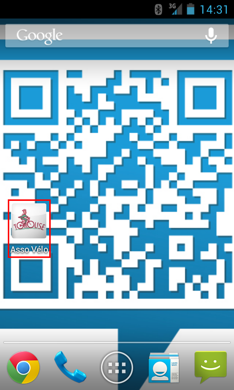
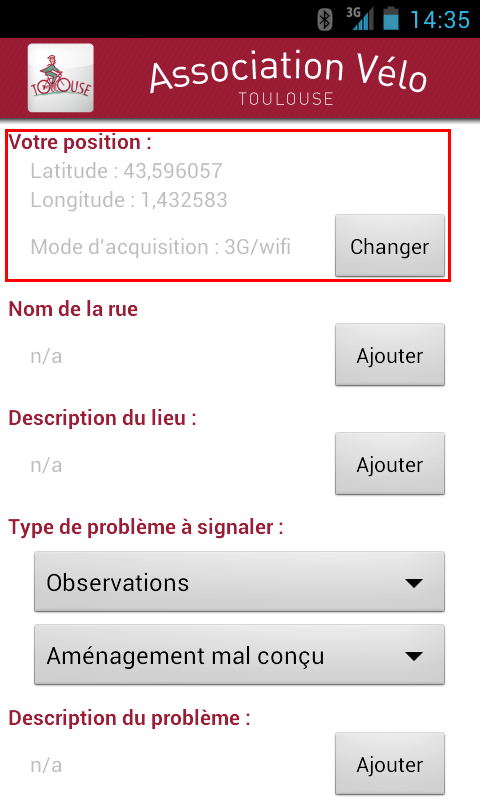
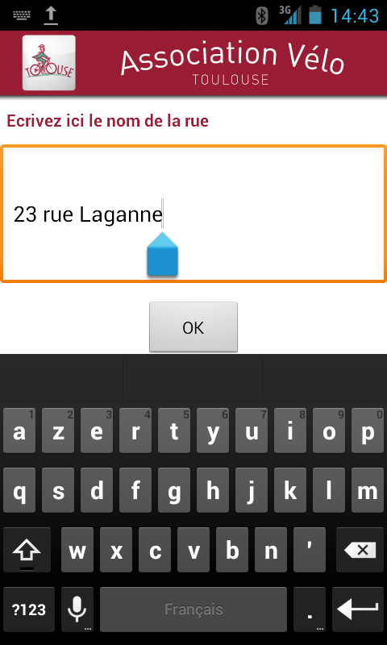
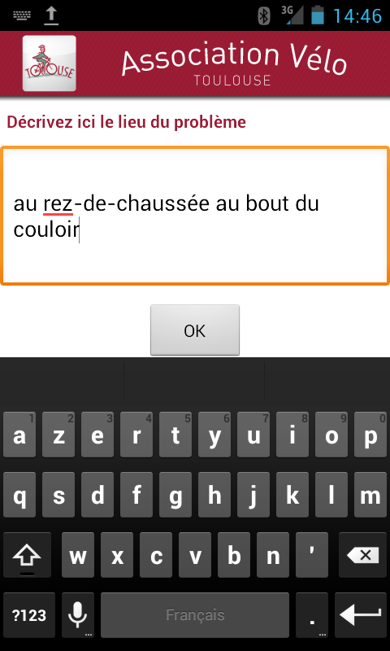
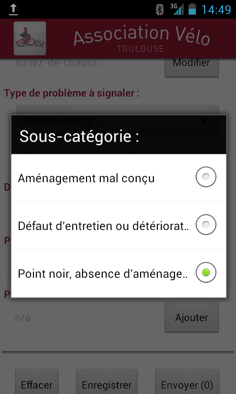
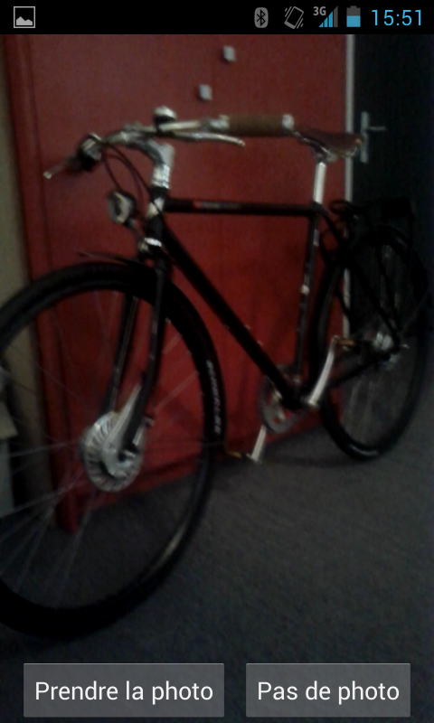
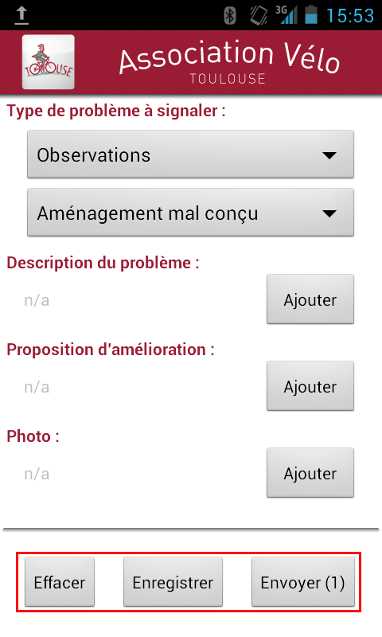

Application Android
### Une fois l'application installée, il faut la lancer en cliquant sur l'icône depuis le bureau du téléphone :

### L'application recherche pa position géographique de l'appareil, il est possible de modifier le mode de géolocalisation en cliquant sur le bouton 'Changer' :

### On saisit le nom de la rue :

### et le lieu du problème :

### Puis on choisit le type de problème - mis à jour automatiquement :

### On prend une photo - qu'il est possible de resaisir :

### On clique ensuite sur 'Enregistrer' puis 'Envoyer' - il est possible d'effacer tous les champs le cas échéant:

L'envoi ne se fait que si une connexion Internet est suffisante : 3G ou WIFI. Dans le cas contraire, on peut fermer l'application et attendre une connexion - les données sont mises en attente dans le téléphone.
L'enregistrement est maintenant en base de données en attente d'une modération afin de le valider.